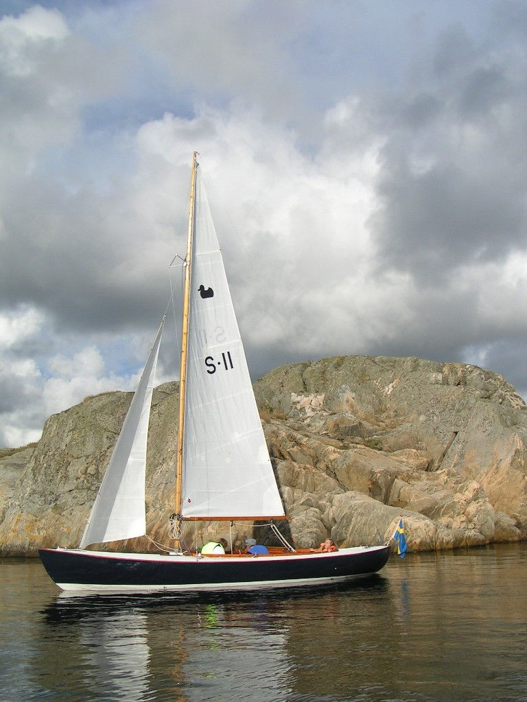

Jan & Inger Dahlkvist

Minnesanteckning båt No 1–12 sammanställd av Torulf Rutgersson efter samtal med Ante Larsson ca 2004, publicerat i Andungebladet 2004–2005.
Andunge Nr 11. Beställare: Mats Seldén. Köpare: Nils Faxén. På denna båt en del extra detaljer. Bordläggning – hondurasmahogny (troligen fel, se nedan), spant – ask, randgång – vit ask, resning – ek, bottenstockar – ek. Mitt i brunnen en rund sarg, vidare höj- och sänkbara tofter. På däcket en tjock grön plastduk Dexolium, plywooddäck. Mast och bom – spruce. Vit bottenfärg. Leverans 1957-06-28.
Minnesanteckning av Anders Faxén 2019. 11:an Vivace var i oregonpine precis som 1:an och 10:an, jag kommer inte ihåg om det var några fler i oregonpine. Jag köpte 11:an av Jonny Albrechtson, som jag var klasskamrat med i många år och som jag gastade i hans olika stjärnbåtar i lika många år.
Anders Faxén skrev 2019-01-24: Jonny seglade 11:an själv men jag är icke säker på att han ägde den, utan det kan ha varit så att den ägdes av Pelle Seldén och han ville göra reklam för båten genom att låta Jonny segla den. Min far köpte den åt mig och min bror Nils-Bertil 1956 eller möjligen -57, men jag blev inom något år egen ägare. Jag kommer inte ihåg vem som köpte den, men jag såg den för säkert tio år sedan i Hällevikstrand då den var till salu, men säljaren ändrade sig och behöll den.
2026 juni. Jan och Inger Dahlkvist meddelar att de övertagit båten och avser att renovera.
| 1956 | Jonny Albrechtson / Seldén |
| 1957–1971 | Nils-Bertil & Anders Faxén |
| 1976 | Jan-Olof Juhlin |
| 1984 | Dan Lind |
| 1986 | Göran Norén |
| 1987 | Alf Åberg |
| 1990 | L-Å Hansson |
| 1993 | Anna-Carin Edlund |
| 2002 | Erland Tholén |
| 2013 | Sven Johansson |
| 2023 | Rolf Bjelm |
| 2026 | Jan & Inger Dahlkvist |